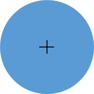

<!DOCTYPE html>
<html>
  <head>
		<title>P300 Experiment</title>
    <script src="jspsych/jspsych.js"></script>
    <script src="jspsych/plugins/jspsych-text.js"></script>
    <script src="jspsych/plugins/jspsych-survey-text.js"></script>
    <script src="jspsych/plugins/jspsych-single-stim.js"></script>
    <script src="jspsych/plugins/jspsych-single-audio.js"></script>
    <link href="jspsych/css/jspsych.css" rel="stylesheet" type="text/css"></link>
	</head>
	<body></body>
  <script>

    // experiment parameters
    var n_trial_per_block = 550;
    var type_order = [ 'visual', 'audio', 'visual','audio'];
    var payload_audio_rare = 2;
    var payload_audio_common = 4;
    var payload_visual_rare = 8;
    var payload_visual_common = 16;

    var timeline = [];

    var welcome = {
      type: "text",
      text: "<p>Welcome to the experiment! Please press any key to continue.</p>",
      timing_post_trial: 2000
    };
    timeline.push(welcome);

    for(var i=0; i<type_order.length; i++){

      if(type_order[i] == 'audio'){

        var instructions = {
          type: "text",
          text: "<p>There will be both high frequency and low frequency tones played through the logitech speakers. " +
            " For this part of the experiment, count the number of high frequency tones you hear. Remember to keep your eyes focused on the black plus sign in the center of the screen.</p>" +
            "<p>The test will begin immediately after you press any key.</p>",
          timing_post_trial: 2000
        };

        timeline.push(instructions);

        var test_stimuli = [
          { stimulus: "audio/2000.wav", payload: payload_audio_common, data: {test_part: 'test', oddball_type: 'common', block: i}},
          { stimulus: "audio/1000.wav", payload: payload_audio_rare, data: {test_part: 'test', oddball_type: 'rare', block: i}}
        ];

        var test = {
          type: "single-audio",
          stimulus: jsPsych.timelineVariable('stimulus'),
          data: jsPsych.timelineVariable('data'),
          trial_ends_after_audio: true,
          choices: jsPsych.NO_KEYS,
          payload: jsPsych.timelineVariable('payload'),
          prompt: '</img>'
        }

        var test_procedure = {
          timeline: [test],
          timeline_variables: test_stimuli,
          randomize_order: true,
          sample: {type:"with-replacement",size: n_trial_per_block,weights:[8,2]}
        };

        timeline.push(test_procedure);


        var survey_trial = {
          type: 'survey-text',
          questions: ["How many times did you hear the high pitched tone? Input your answer and click next to continue to the next part of the experiment."],
          rows: [1],
          columns: [1],
          data: {block: i}
        };

        timeline.push(survey_trial);

        var debrief_block = {
          type: "text",
          text: function() {
            var which_block = jsPsych.data.get().last(1).values()[0].block;
            var common_trials = jsPsych.data.get().filter({oddball_type: 'common', block: which_block}).count();
            var rare_trials = jsPsych.data.get().filter({oddball_type: 'rare', block: which_block}).count();

            return "<p>There were "+rare_trials+" high frequency tones.</p><p>Press any key to complete this part of the experiment and continue to the next.</p>";

          }
        }

        timeline.push(debrief_block);

      }

      if(type_order[i] == 'visual'){

        var instructions = {
          type: "text",
          text: "<p>In this section, either a red or blue circle with a black plus sign in the center will appear" +
            " on the screen.</p><p>Your task is to count how many of the circles are the color red. Remember to keep your eyes focused on the black plus sign in the center of the screen.</p>" +
            "<p>Press any key to continue and immediately start the test.</p>" +
            "<div style='float: left;'></img></div>" +
            "<div style='float: right;'></img></div>",
          timing_post_trial: 2000
        };
        timeline.push(instructions);

        var test_stimuli = [
          { stimulus: "img/Blue.jpg", payload: payload_visual_common, data: {test_part: 'test', oddball_type: 'common', block: i}},
          { stimulus: "img/Red.jpg", payload: payload_visual_rare, data: {test_part: 'test', oddball_type: 'rare', block: i}}
        ];

        var fixation = {
          type: 'single-stim',
          stimulus: "img/Fixation.jpg",
          timing_response: 133,
          data: {test_part: 'fixation'}
        }

        var test = {
          type: "single-stim",
          stimulus: jsPsych.timelineVariable( 'stimulus'),
          data: jsPsych.timelineVariable('data'),
          timing_response: 83,
          payload: jsPsych.timelineVariable('payload')
        }

        var test_procedure = {
          timeline: [fixation, test],
          timeline_variables: test_stimuli,
          randomize_order: true,
          sample: {type:"with-replacement",size: n_trial_per_block,weights:[8,2]}
        };

        timeline.push(test_procedure);


        var survey_trial = {
          type: 'survey-text',
          questions: ["How many red circles were there? Input your answer and click next to continue to the next part of the experiment."],
          rows: [1],
          columns: [1],
          data: {block: i}
        };

        timeline.push(survey_trial);

        var debrief_block = {
          type: "text",
          text: function() {
            var which_block = jsPsych.data.get().last(1).values()[0].block;
            var common_trials = jsPsych.data.get().filter({oddball_type: 'common', block: which_block}).count();
            var rare_trials = jsPsych.data.get().filter({oddball_type: 'rare', block: which_block}).count();

            return "<p>There were "+rare_trials+" red circles.</p><p>Press any key to complete this part of the experiment and continue to the next.</p>";
          }
        }

        timeline.push(debrief_block);
      }
    }
    var instruction_change = {
      type: "text",
      text: "<p>Please remain seated and alert the instructor you have finished the experiment, the experimenter will be in shortly thereafer, thank you.</p>",
      timing_post_trial: 2000
    }

    timeline.push(instruction_change);

    jsPsych.init({
      timeline: timeline,
      preload_images: ['img/Blue.jpg','img/Red.jpg','img/Fixation.jpg'],
      preload_audio: ['audio/2000.wav', 'audio/1000.wav'],
      on_finish: function() {
        jsPsych.data.get().localSave('csv', 'experiment-data.csv');
      }
    });
  </script>
</html>
